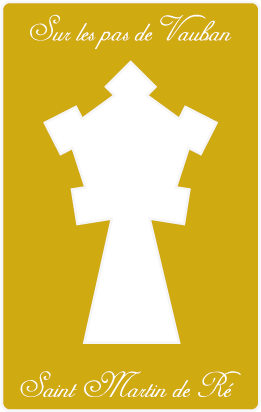
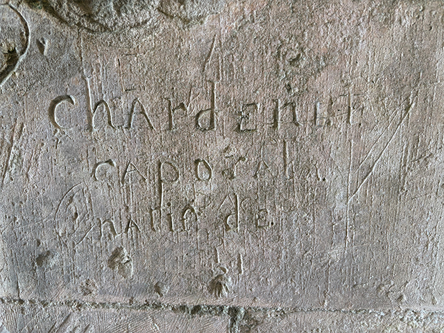

D'où venait notre caporal ?

Tentatives restantes : 4
La Citadelle, la forteresse dans la forteresse
À l'extrémité est de l'enceinte urbaine se dresse la pièce maîtresse du dispositif de Vauban : la Citadelle. Conçue comme un carré parfait flanqué de quatre bastions puissants, elle possède son propre port fortifié et fonctionne en totale autonomie par rapport au reste de la ville.
C'est le quartier général de la garnison. Vauban l'a pensée comme un refuge ultime : si la ville venait à tomber aux mains de l'ennemi, les soldats pouvaient se replier dans la citadelle et continuer à se battre en attendant les renforts du continent. À l'intérieur, tout est prévu pour la survie et le quotidien de plus de 1 000 hommes : des casernes rectilignes, une chapelle, de vastes poudrières à l'épreuve des bombes et une grande place d'armes centrale. C’est un condensé de discipline militaire et de rigueur géométrique grand écran.
Voici votre indice :
La deuxième molette est un multiple de 3.